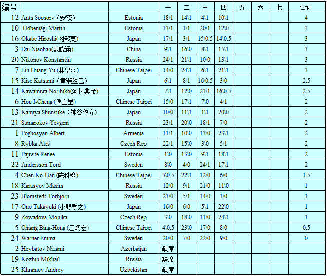

世锦赛QT截止第四轮积分情况（根据直播统计）
首页
五子棋新闻
#1 世锦赛QT截止第四轮积分情况（根据直播统计） 作者：卯寻月 发表时间：2011-8-2 23:01:49
希望一次成功~~
［ 第五象限 于 2011-8-2 23:05:12 时花20金币送鲜花一朵］
［ 梧桐风 于 2011-8-2 23:08:49 时花20金币送鲜花一朵］
［此帖子已被 卯寻月 在 2011-8-2 23:19:11 编辑过］
#2 Re:世锦赛QT截止第四轮积分情况（根据直播统计） 作者：第五象限 发表时间：2011-8-2 23:05:55
一次成功~~ ［ 卯寻月 于 2011-8-2 23:06:39 时花20金币送鲜花一朵］
#3 Re:世锦赛QT截止第四轮积分情况（根据直播统计） 作者：梧桐风 发表时间：2011-8-2 23:10:15
林皇羽只有两分？ ［ 卯寻月 于 2011-8-2 23:20:33 时花20金币送鲜花一朵］
#4 Re:世锦赛QT截止第四轮积分情况（根据直播统计） 作者：卯寻月 发表时间：2011-8-2 23:15:42
错了，我改一下~~
#11 Re:世锦赛QT截止第四轮积分情况（根据直播统计） 作者：死劲哭 发表时间：2011-8-3 9:28:56
恭贺小天老师！